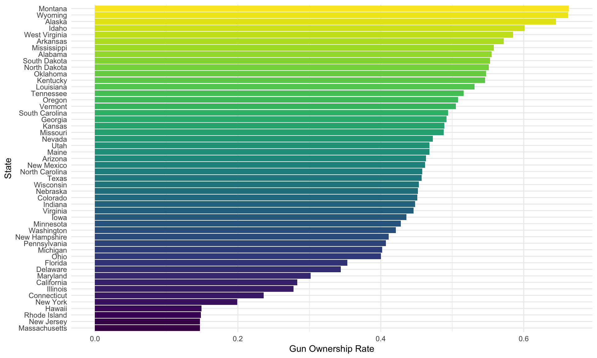
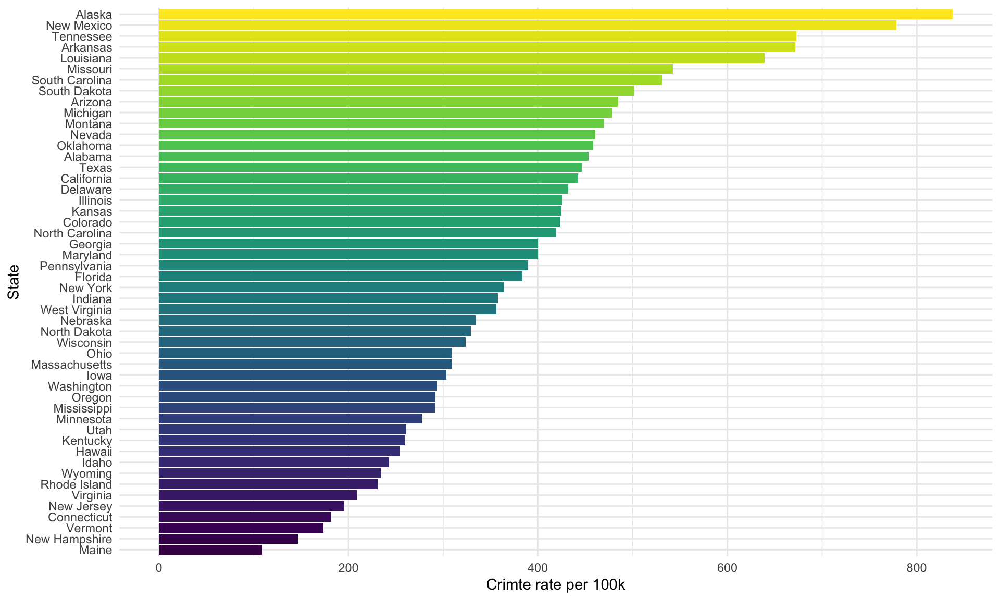
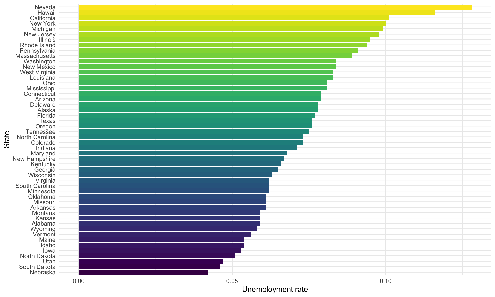

Regression-Model 2
Description
Searching for more potential predictors and finding the association between innocent death and other factors, we decide to concern about the variables (Gun ownership rates, crime rate, unemployment rate in each state) and just concentrate on 2020.
- In this model, predictors and variables are below:
- innocent death(per 10K): count of innocent death divided by state population and multiplied by 10K
- state: the best state location where the injury causing death happened that we can find using Google Maps.
- age_bin: age divided into 6 groups(0-14, 15-24, 25-34, 35-54, 55-85, 85+)
- gender: Male, Female
- race: usually based on visual evidence or official reports(European-American/White, African-American/Black, Native American/Alaskan, Asian/Pacific Islander, Hispanic/Latino)
- Gun ownership rate: rate of the act of owning a gun, either legal or illegal
- Crime Rate per 100K: be calculated by dividing the total number of reported crimes of any kind by the total population and multiplied by 100K
- Unemployment rate: measures unemployment within the civilian non-institutional population aged 16 years and olde
Explorative Graphs
Gun ownership rate by state in 2020
Gun ownership rates vary by state and Montana has the highest.
gun_owner %>%
mutate(state = fct_reorder(state, gun_ownership)) %>%
ggplot(aes(x = gun_ownership, y = state, fill = state)) +
geom_bar(stat = "identity", show.legend = FALSE) +
labs(x = "Gun Ownership Rate",
y = "State")
Crime rate by state in 2020
The crime rate varies from state to state, with Alaska showing the highest rate
crime_stat %>%
filter(state != "District of Columbia") %>%
mutate(state = fct_reorder(state, crime_per_10e6)) %>%
ggplot(aes(x = crime_per_10e6, y = state, fill = state)) +
geom_bar(stat = "identity", show.legend = FALSE) +
labs(x = "Crimte rate per 100k",
y = "State")
Unemployment rate by state in 2020
Unemployment rates in each state show a diversified trend and Nevada has the highest unemployment rate.
unempolyment_stat %>%
filter(state != "District of Columbia") %>%
mutate(state = fct_reorder(state, unemploy_rate)) %>%
ggplot(aes(x = unemploy_rate, y = state, fill = state)) +
geom_bar(stat = "identity", show.legend = FALSE) +
labs(x = "Unemployment rate",
y = "State")
Statistical Analysis
1.Modeling
Because the distribution of innocent death per 10K is the same in model 1, here we still conduct log transformation and the formula is followed below:
\[ log(innocent \space death \space per \space 100k) = \beta_0 + \beta_1state + \beta_2 age + \beta_3 gender + \beta_4 race + \beta_5Gun \space ownership \space rate\] \[ + \beta_6Crime \space rate(per \space 100K) + \beta_7 Unemployment \space rate\]
# Fit a model
fit2 <- lm(log(innocent_kill_per100k) ~ state + age_bin + gender + race + gun_ownership + crime_per_10e6 + unemploy_rate,
data = reg_df2)
summary(fit2) %>%
broom::tidy() %>%
knitr::kable() %>%
kable_styling() %>%
scroll_box(height = "200px")| term | estimate | std.error | statistic | p.value |
|---|---|---|---|---|
| (Intercept) | 0.6891827 | 0.3229229 | 2.1342022 | 0.0334034 |
| stateAL | -1.0989007 | 0.3106113 | -3.5378643 | 0.0004483 |
| stateAR | -1.1173843 | 0.3305492 | -3.3803869 | 0.0007914 |
| stateAZ | -1.3916567 | 0.3163712 | -4.3988095 | 0.0000138 |
| stateCA | -2.2225582 | 0.2832757 | -7.8459179 | 0.0000000 |
| stateCO | -1.2473995 | 0.3171607 | -3.9330204 | 0.0000981 |
| stateCT | -1.6116779 | 0.4187934 | -3.8483839 | 0.0001373 |
| stateDE | -0.6710861 | 0.4610444 | -1.4555781 | 0.1462546 |
| stateFL | -2.2344374 | 0.2932063 | -7.6207001 | 0.0000000 |
| stateGA | -1.9956775 | 0.3064578 | -6.5120789 | 0.0000000 |
| stateHI | -1.0524806 | 0.4206326 | -2.5021376 | 0.0127230 |
| stateIA | -1.2243394 | 0.3558764 | -3.4403499 | 0.0006390 |
| stateID | -0.2872206 | 0.3690521 | -0.7782658 | 0.4368495 |
| stateIL | -1.9989388 | 0.3002974 | -6.6565298 | 0.0000000 |
| stateIN | -1.1786486 | 0.3285479 | -3.5874485 | 0.0003732 |
| stateKS | -0.6529928 | 0.3429460 | -1.9040688 | 0.0575827 |
| stateKY | -1.4161355 | 0.3295630 | -4.2970104 | 0.0000215 |
| stateLA | -1.5039054 | 0.3069370 | -4.8997198 | 0.0000014 |
| stateMA | -2.2236702 | 0.3897218 | -5.7057881 | 0.0000000 |
| stateMD | -1.8532493 | 0.3235074 | -5.7286149 | 0.0000000 |
| stateME | -0.3514603 | 0.3882003 | -0.9053582 | 0.3657935 |
| stateMI | -2.3535326 | 0.3468094 | -6.7862425 | 0.0000000 |
| stateMN | -1.5947587 | 0.3446404 | -4.6273120 | 0.0000049 |
| stateMO | -1.1941849 | 0.3226003 | -3.7017473 | 0.0002426 |
| stateMS | -1.3511323 | 0.3567108 | -3.7877529 | 0.0001741 |
| stateMT | -0.2404037 | 0.3893960 | -0.6173760 | 0.5373205 |
| stateNC | -2.0555387 | 0.3139196 | -6.5479793 | 0.0000000 |
| stateND | 0.9274598 | 0.4168436 | 2.2249589 | 0.0266133 |
| stateNE | -1.0291044 | 0.3921767 | -2.6240835 | 0.0090041 |
| stateNH | -1.1626280 | 0.4588618 | -2.5337212 | 0.0116476 |
| stateNJ | -2.3143862 | 0.3457220 | -6.6943568 | 0.0000000 |
| stateNM | -0.6495582 | 0.3301576 | -1.9674184 | 0.0497911 |
| stateNV | -0.9519919 | 0.3299262 | -2.8854693 | 0.0041092 |
| stateNY | -2.4515176 | 0.3071817 | -7.9806751 | 0.0000000 |
| stateOH | -2.0994949 | 0.3177560 | -6.6072538 | 0.0000000 |
| stateOK | -1.2188956 | 0.3120061 | -3.9066408 | 0.0001090 |
| stateOR | -1.1826654 | 0.3723930 | -3.1758526 | 0.0016039 |
| statePA | -2.2032772 | 0.3124064 | -7.0525982 | 0.0000000 |
| stateRI | -0.2128800 | 0.7125128 | -0.2987737 | 0.7652602 |
| stateSC | -1.5305588 | 0.3290521 | -4.6514174 | 0.0000044 |
| stateSD | 0.2715696 | 0.5369194 | 0.5057921 | 0.6132673 |
| stateTN | -1.6386419 | 0.3567650 | -4.5930568 | 0.0000058 |
| stateTX | -2.2138739 | 0.2894506 | -7.6485371 | 0.0000000 |
| stateUT | -0.4668296 | 0.3288249 | -1.4196908 | 0.1564378 |
| stateVA | -1.9748317 | 0.3167580 | -6.2345121 | 0.0000000 |
| stateVT | -0.0624461 | 0.4580131 | -0.1363414 | 0.8916166 |
| stateWA | -1.5928467 | 0.2971262 | -5.3608424 | 0.0000001 |
| stateWI | -1.0657284 | 0.3172038 | -3.3597595 | 0.0008512 |
| stateWV | -0.7995538 | 0.3702908 | -2.1592591 | 0.0313943 |
| stateWY | -0.2374881 | 0.5327764 | -0.4457556 | 0.6560030 |
| age_bin15-24 | 1.2784345 | 0.2015292 | 6.3436688 | 0.0000000 |
| age_bin25-34 | 1.5014500 | 0.2011661 | 7.4637317 | 0.0000000 |
| age_bin35-54 | 1.1715659 | 0.2011345 | 5.8247875 | 0.0000000 |
| age_bin55-84 | 0.4509995 | 0.2091285 | 2.1565668 | 0.0316050 |
| age_bin85+ | 2.5418229 | 0.3469829 | 7.3254991 | 0.0000000 |
| genderMale | 0.9189116 | 0.0732914 | 12.5377896 | 0.0000000 |
| raceAsian/Pacific Islander | -0.8560392 | 0.1773996 | -4.8254853 | 0.0000020 |
| raceEuropean-American/White | -1.5550598 | 0.0755542 | -20.5820416 | 0.0000000 |
| raceHispanic/Latino | -0.9486063 | 0.0989200 | -9.5896270 | 0.0000000 |
| raceNative American/Alaskan | 0.4062721 | 0.1885110 | 2.1551642 | 0.0317153 |
summary(fit2) %>%
broom::glance() %>%
knitr::kable() %>%
kable_styling()| r.squared | adj.r.squared | sigma | statistic | p.value | df | df.residual | nobs |
|---|---|---|---|---|---|---|---|
| 0.779379 | 0.7484607 | 0.6610668 | 25.20763 | 0 | 59 | 421 | 481 |
According to the statistics in the table above, we could conclude that all all P-value is smaller than significant level which means the association is significant in statistical aspect although some levels in state have no significant association.
When concentrating on the table of R.squared, we could figure out that adjusted \(R^2\) value is 0.75 which means that 75% of the variability in the outcome data can be explained by the model, especially if R-squared value r > 0.7 this value is generally considered strong effect size (Ref:Moore, D. S., Notz, W. I, & Flinger, M. A. (2013). The basic practice of statistics (6th ed.))
2.MLR dignostics
The four graphs is used for proving the homoscedasticity of residual. When looking deep into those graphs, we’re able to conclude that all assumption is satisfied.
- Residuals vs Fitted: show that it has linear relationship due to the nearly equal distribution.
- Q-Q plot: illustrate residual is normality
- Scale-Location: The assumption of homoscedasticity has been checked.
- Residuals vs Leverage: shows that there’s no too many outlier points and influential points in the plot.
# Model diagnosis
par(mfrow = c(2, 2))
plot(fit2)